I love making things in my free time. Here are some creative coding experiments, crafting projects, games, apps, and more.
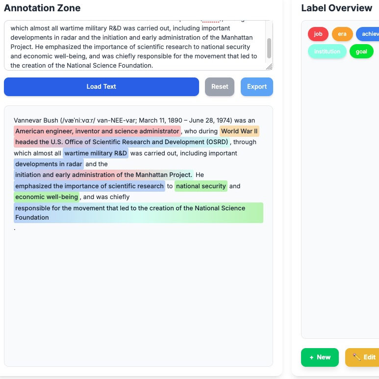
A lightweight tool for multilabel span annotation.
It's just a single HTML file,
so compared to some of the professional tools out there
it's great for small workloads or for task prototyping.
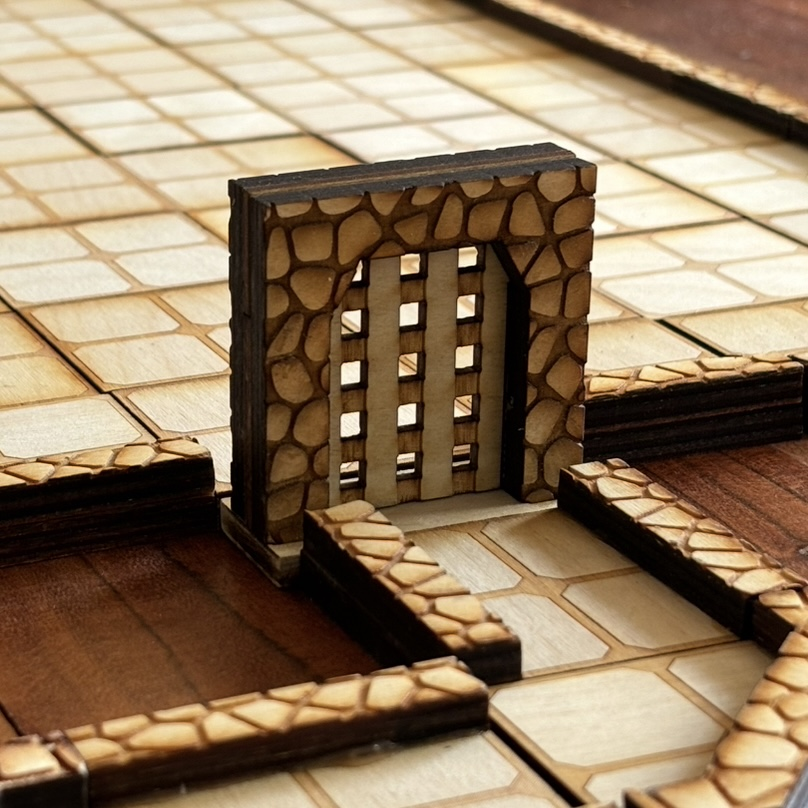
Terraincraft
Picking up where I left off at the UChicago Fab Lab,
I've been working on a new system of modular grid tiles.
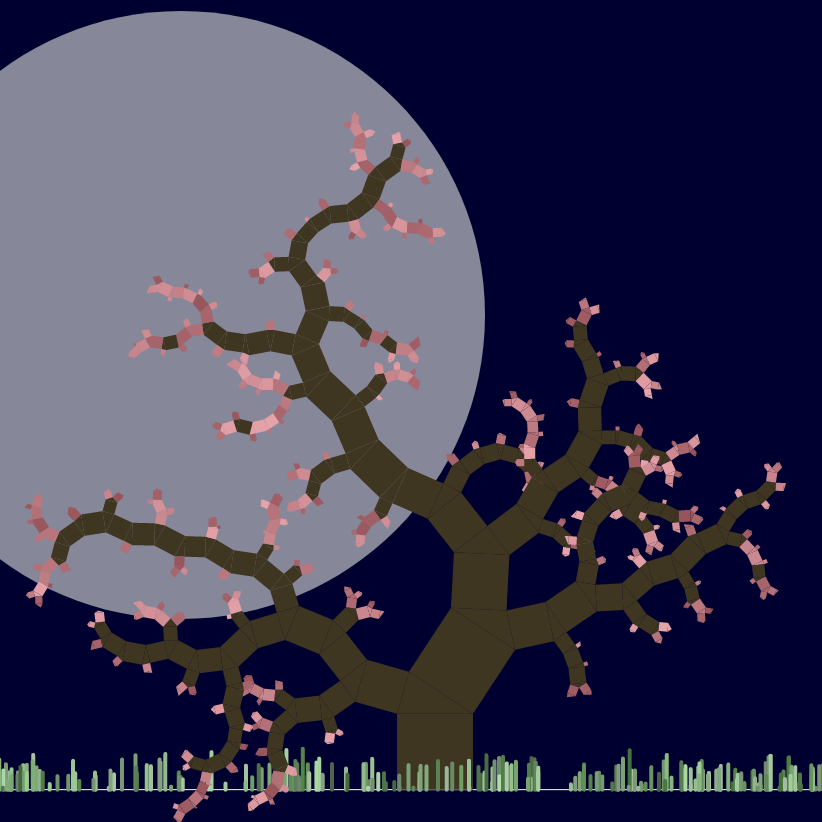
You can plant windswept grass, pythagorean trees, and many moons.
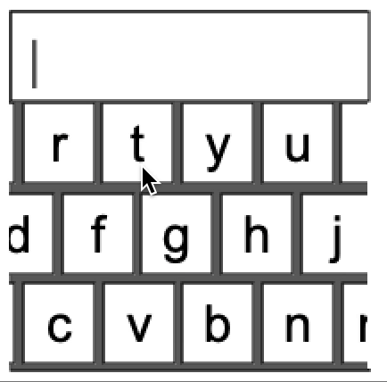
A tiny keyboard for Chris Harrison's DHCS class; made some [bugfixes] to the processing.js library.
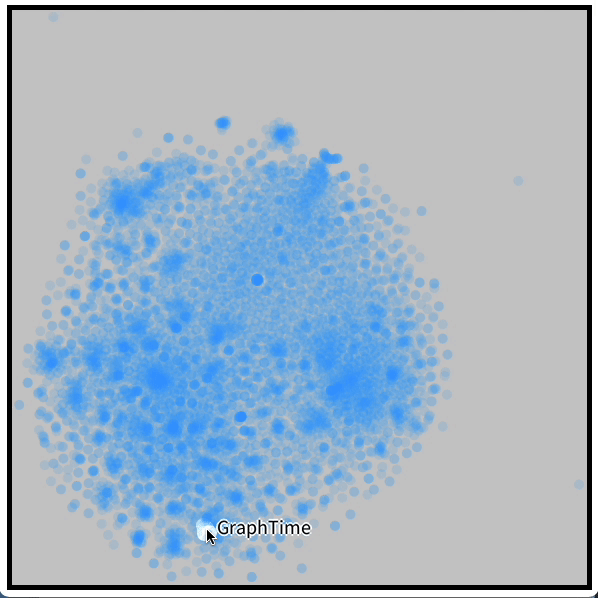
Interactive Vector Cloud
I built a way to visualize 2D labeled point clouds.
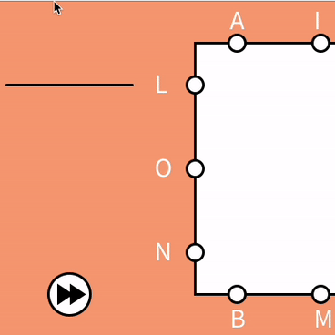
Infinite Letterboxing
In college I loved playing Letterboxed (from the NYTimes) with my friends.
They only release one game a day, so I built this app to let us keep playing forever.
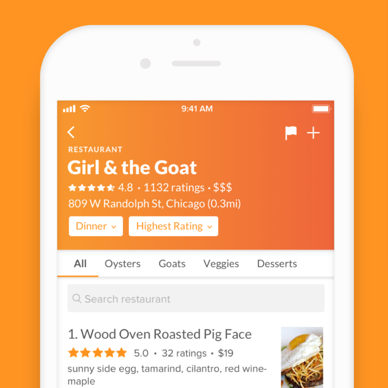
Some of my friends in college built an app to help people find the best dish at any restaurant.
I joined in to help with the ML pipeline, and built a trend-tracking tool for restaurants.
We got into YC, but the app is defunct now.
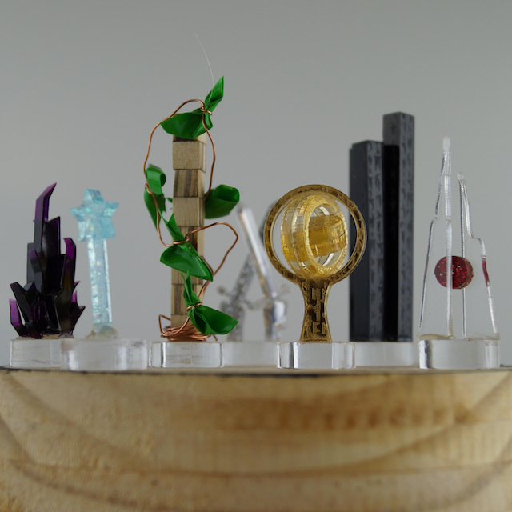
In college, I played Dungeons & Dragons with my friends and loved to design worlds, characters, and tabletop objects.
At UChicago's Fab(ulous) Lab, we made artistic player tokens and laser-cut wooden architectural maps.
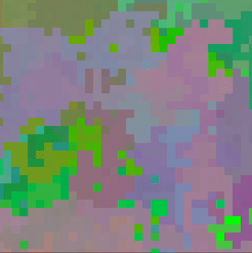
Random Walk Pixelgen
A random walk with 5 degrees of freedom. Sometimes I let it run in the background, and then pause to print the pixels I like.
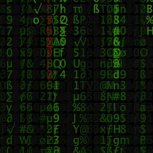
When your friends jokingly ask if you're a hacker, you embrace the bit.
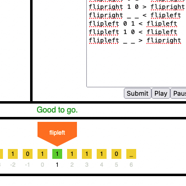
Ahh, the irony of making this in Elm.
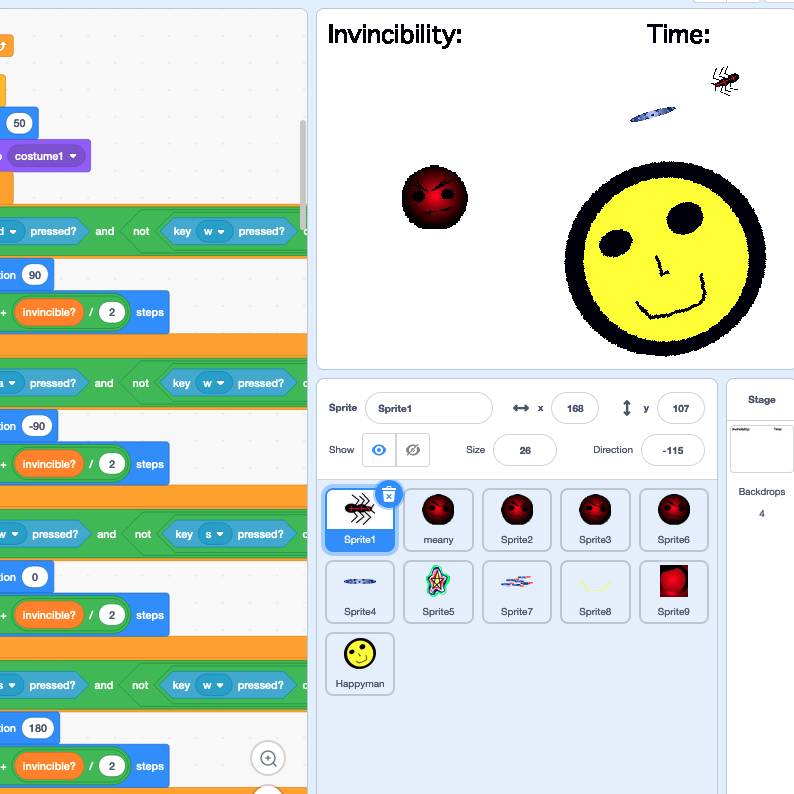
Creative coding in Scratch!
Although I wrote my first code in Microworlds at a very young age,
Scratch was the first time I got to create my own worlds, games, and systems with code.
I also attended the very first scratch conference (2008), and later collaborated with the
Scratch team at MIT (2015).